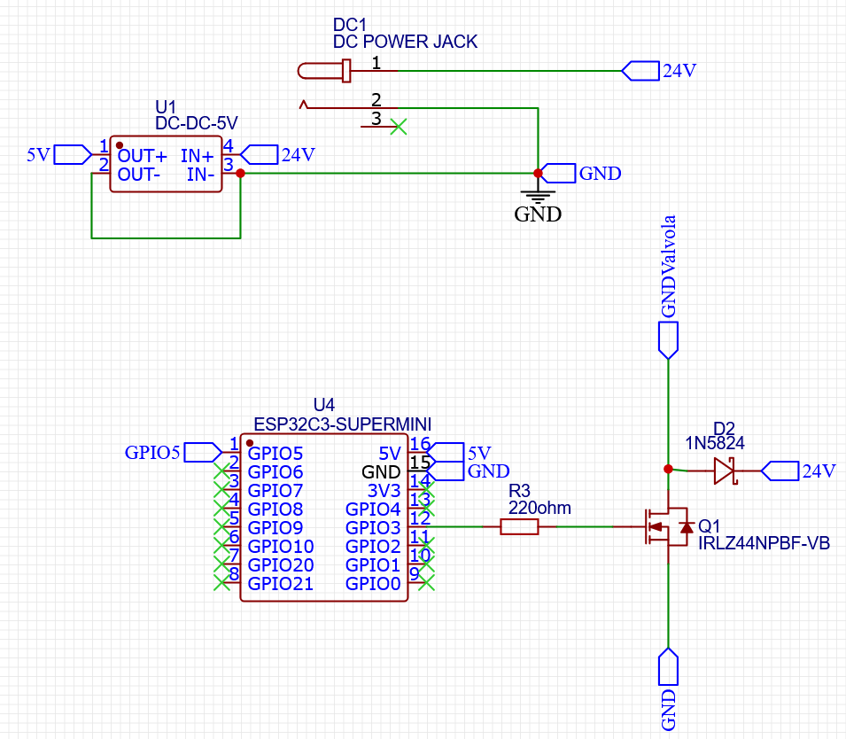
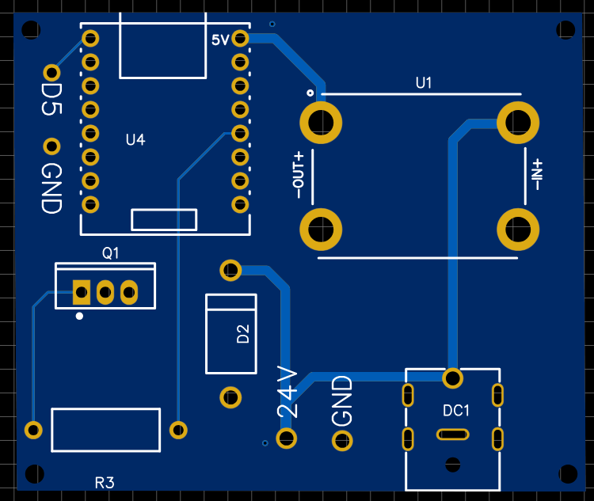
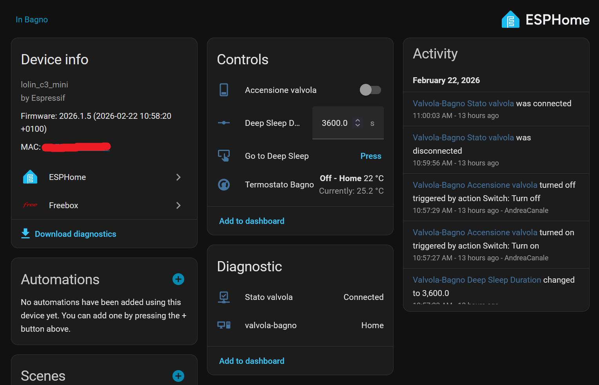

The reasons for a DIY smart home
In recent years, the concept of a smart home has become increasingly popular, offering convenience, security, and energy efficiency. However, many commercial smart home solutions, like valve for heaters, can be expensive, furthermore there are privacy/security concerns with proprietary systems especially when buying devices from cheap vendor. This is where DIY smart home projects come in, allowing individuals to create their own customized smart home systems using affordable components and open-source software.
What we are going to build
In this article we will see how to create two components for my smart home using ESPHome, I assume that you already have a Home Assistant setup, if not I suggest you to check the official documentation of Home Assistant before proceeding. The two components we will create are:
- A smart valve for the heaters, using an ESP32-C3 and a cheap thermal actuator.
- A temperature and humidity sensor, using an ESP32-C3 and a DHT22 sensor. I also have added a BMP180 sensor to measure the atmospheric pressure, but it is not strictly necessary for the project.
Other devices like smart plugs or similar require connection to 110/220V and a high level of skill in electronics to make them secure, so I will not cover them in this article besides I have implemented them as a test but not using it in my setup as a security precaution(usually cheap board for AC like relay or voltmeter are unsafe and have serious safety issues so avoid them if you care about your home and your life). However, ESPHome is really easy to use and you can create your own custom devices with it, so feel free to experiment and create your own smart home components.
I AM NOT RESPONSIBLE FOR ANY DAMAGE TO PEOPLE OR PROPERTY. THIS ARTICLE IS FOR INFORMATIONAL PURPOSES ONLY. IF YOU WANT TO BUILD CUSTOM DEVICES, PLEASE MAKE SURE YOU HAVE THE APPROPRIATE EXPERIENCE AND USE EXTREME CAUTION.
Temperature and humidity sensor
Since we need to measure the temperature and humidity in the rooms to regulate our heaters, we will start with the temperature and humidity sensor. For this component, we will use an ESP32-C3 microcontroller and a DHT22 sensor. The DHT22 is a popular and cheap sensor for measuring temperature and humidity with a decent accuracy, and it is easy to use with the ESP32-C3. For the maximum accuracy use BMP sensor series like BMP180 or BMP280, they are more expensive but they are more accurate and they can also measure the atmospheric pressure.
For the hardware, you will need:
- An ESP32 board (I use the ESP32-C3 Supermini but ESPHome supports a wide range of ESP32 boards, so you can choose the one that best suits your needs and budget).
- A DHT22 sensor (or a BMP180 sensor if you want to measure atmospheric pressure).
- 3 Wires to connect the sensor to the ESP32.
The wiring is pretty simple, you just need to connect the VCC and GND pins of the sensor to the 3.3V and GND pins of the ESP32, and the data pin of the sensor to a GPIO pin of the ESP32 (for example GPIO3).
Here my configuration for the ESPHome:
esphome:
name: my-sensor
esp32:
board: lolin_c3_mini # Change this to your board
framework:
type: esp-idf
# Enable serial/api logging
logger:
# Enable Home Assistant API
api:
ota:
- platform: esphome
password: ""
wifi:
ssid: "my-ssid"
password: "your-secret-password"
output_power: 8.5dB # If you use ESP32-C3 supermini you need to reduce the output power to avoid overheating issues and interference with the stock antenna
sensor:
- platform: dht
pin: 3
temperature:
name: "Temperature"
humidity:
name: "Humidity"
model: DHT22
update_interval: 60s
deep_sleep:
id: deep_sleep_1
run_duration: 1min
sleep_duration: 15min
switch:
- platform: template
name: "OTA Mode"
turn_on_action:
- deep_sleep.prevent: deep_sleep_1
turn_off_action:
- deep_sleep.allow: deep_sleep_1
button:
- platform: restart
name: "Restart ESP32C3"The deep sleep component is optional but it is useful to save battery if you are using a battery powered ESP32. You can buy and ESP32 with a battery connector and a IC to manage battery or you can use a power bank.
You can flash it using the ESPHome CLI, just run the following command in the terminal:
pipx install esphome # If you don't have pipx installed, you can install it using your package manager
esphome run sensor.yamlSmart valve for heaters
For the smart valve, we will use an ESP32-C3 microcontroller and a cheap thermal actuator. The thermal actuator is a type of valve that can be controlled electronically, allowing us to open and close the valve to regulate the flow of water to the heaters. This type of valve is not modulating, it is either open or closed, this can be a limitation if you want to have a more precise control of the temperature, but it is a good compromise between cost and functionality.
Check also for the valve thread, typically for heaters you will need a M30x1.5 but check the specifications of your heaters before buying the valve.
For the hardware, you will need:
- An ESP32 board (I use the ESP32-C3 Supermini but ESPHome supports a wide range of ESP32 boards, so you can choose the one that best suits your needs and budget).
- A thermal actuator (you can find cheap ones on Amazon or Aliexpress, just make sure to check the specifications and the compatibility with your heaters). This is the valve that I bought for around 10€. Buy a 24V DC version, this will be much safer than the 220V AC version.
- A 24V 1A DC power supply.
- A MOSFET to control the power to the valve. (Or a relay module but it will be noisy)
- 24V to 5V step down converter to power the ESP32 from the same power supply of the valve.
- A DC jack to connect the power supply to the circuit.
- A 1N5824 diode to protect the circuit from the back EMF generated by the valve when it is turned off.
- A 220 ohm resistor to limit the current to the MOSFET.
The last two components are needed only if you are using a MOSFET instead of a relay module.
The 24V thermal actuators will need a 24V power supply so this solution assume that you have a 24V power supply available near the heaters.
The wiring is the following if you use a MOSFET:

- The diode is connected in parallel to the valve, with the cathode connected to the positive terminal of the valve and the anode connected to the negative terminal of the valve. This will protect the circuit from the back EMF generated by the valve when it is turned off.
- The resistor is connected in series with the gate of the MOSFET, this will limit the current to the gate and protect the ESP32 from damage.
I also made a PCB to make the wiring easier and more secure.

You can download the PCB gerber files from this link. The buck converter of the PCB is the following: 24V to 5V step down converter for around 2€.
Here my configuration for the ESPHome:
esphome:
name: my-valve
on_boot:
priority: 800.0 # Run it when the whole firmware is already initialized
then:
- lambda: |- # Support maintaining the state of the valve during deep sleep
gpio_deep_sleep_hold_dis();
gpio_hold_dis(GPIO_NUM_3);
esp32:
board: lolin_c3_mini
framework:
type: esp-idf
# Enable logging
logger:
# Enable Home Assistant API
api:
ota:
- platform: esphome
password: ""
wifi:
ssid: "my-ssid"
password: "your-secret-password"
output_power: 8.5dB # If you use ESP32-C3 supermini you need to reduce the output power to avoid overheating issues and interference with the stock antenna
switch:
- platform: gpio
name: "Open the valve"
pin: 3
id: relay
restore_mode: DISABLED
binary_sensor:
- platform: status
name: "State of the valve"
deep_sleep:
id: deep_sleep_esp
script:
- id: go_to_sleep
then:
- logger.log:
format: "Going to deep sleep for %.0f seconds"
args: ['id(sleep_duration).state']
- lambda: |-
gpio_deep_sleep_hold_en();
gpio_hold_en(GPIO_NUM_3);
- deep_sleep.enter:
id: deep_sleep_esp
sleep_duration: !lambda 'return id(sleep_duration).state * 1000;'
number:
- platform: template
name: "Deep Sleep Duration"
id: sleep_duration
optimistic: true
min_value: 1
max_value: 28800 # support deep sleep for all the night
step: 1
unit_of_measurement: "s"
mode: box
initial_value: 3600 # default minimum cycle time of 1 hour
button:
- platform: template
name: "Go to Deep Sleep"
on_press:
- script.execute: go_to_sleepThis configuration works if the thermal actuator is normally closed, if you have a normally open valve you need to set inverted: true in the switch component to allow the switch to be consistent with the actuator state.
The deep sleep is configurable from Home Assistant if you want to use it.
You can flash it using the ESPHome CLI, just run the following command in the terminal:
esphome run termal_actuator.yamlThe Home Assistant integration
Once you have flashed the ESP32 with the ESPHome configuration, you can add the devices to Home Assistant. you can find them in the device panel under the settings page.
Once you have added the devices to Home Assistant, you can create the termostat using the generic thermostat helper, you can find the documentation here. The generic thermostat allows you to create a thermostat using a temperature sensor and a switch to control the heating. You can create it under the Helpers tab in the device page. You can also create automations to regulate the temperature based on the time of the day or other conditions.
You can also create a dashboard to control the devices and monitor the temperature and humidity in the rooms. Home Assistant has a powerful dashboard editor that allows you to create custom dashboards with different types of cards and widgets. If you also have other smart home devices(not only with ESPHome), you can integrate them(if supported) into the same dashboard to have a centralized control of your smart home.
When you will have configured the thermostat and the device, you will have something like this when you click on the device card of the valve:

Conclusion
In this article we have seen how to create two components for a DIY smart home using ESPHome, a temperature and humidity sensor and a smart valve for heaters. These components are just examples of what you can create with ESPHome, the possibilities are endless and you can create your own custom devices to suit your needs and budget. DIY smart home projects can be a fun and rewarding way to create a personalized smart home system, and they can also save you money compared to commercial solutions furthermore they are more privacy-preserving than commercial solutions.